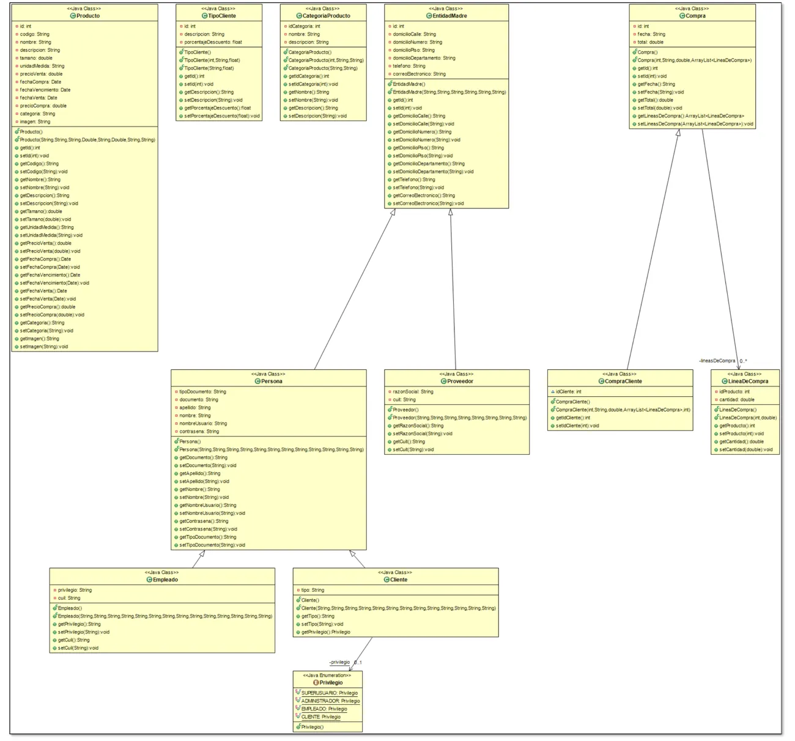
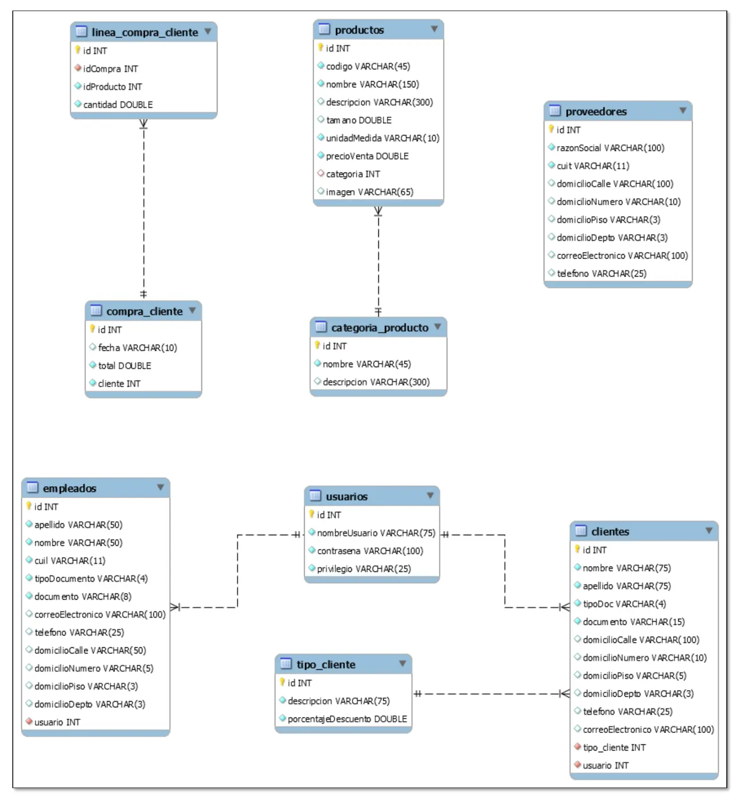

Final
Lo único que hay es el sistema que presentó un grupo de alumnos en 2020. Sirve para ver cómo puede quedar el trabajo, no para saber qué se pide hoy.
Resumen no juzgado. Todavía nadie evaluó si alcanza para estudiar solo con esto.
Antes de estudiar de acá
No hay consigna de la cátedra ni exámenes finales en el Drive. Todo lo de esta página sale de un trabajo de alumnos de 2020, del plan viejo. El código no es un modelo revisado por la cátedra. Confirmá en tu comisión qué se presenta y cómo se evalúa.
Qué se presentó
La carpeta se llama «Sistema para final». Es un sistema de gestión para una forrajería. Trae estos documentos.
| Documento | Qué trae | Dónde |
|---|---|---|
| Diagrama de clases | Las clases con atributos, constructores y métodos | Documentación, página 3 |
| Modelo de datos | Las tablas, en diagrama «Crow Foot» | Documentación, página 4 |
| Casos de uso | Un caso resumen, CUR1 - Comprar, y tres de usuario | Documentación, páginas 5 a 7 |
| Capturas de pantalla | Inicio, contacto, ABMC y perfil de usuario, entre otras | Documentación, páginas 8 a 17 |
| Fragmentos de código | Un caso elegido, «Consulta de Proveedores», por todas sus capas | Documentación, páginas 18 a 29 |
| Listado de casos de uso | 7 casos y 5 ABMC | Archivo aparte |
| Modelo de dominio | Clases del negocio y sus relaciones | Archivo aparte |
| Base de datos | Volcado de MySQL con las tablas | Archivo aparte |
| Usuarios para acceder | Una tabla de usuarios y privilegios | Archivo aparte |
| Repositorio | Una nota que dice dónde están el código, las librerías y la base | Archivo aparte |
Los casos de uso del listado
- Realizar compra (cliente).
- Realizar una consulta (cliente).
- Cargar compra de un cliente, cuando llama o envía WhatsApp.
- Ingresar stock.
- Revisar productos a vencer.
- Armar pedidos de compras que el cliente hizo por la web.
- Cargar promociones.
Se suman los ABMC de producto, categoría de producto, proveedor, cliente y tipo de cliente.
Cómo está armado el sistema
El código de ejemplo se reparte en tres paquetes con nombre propio, más un cuarto para la excepción del grupo.
| Paquete o archivo | Qué hace en el trabajo | Ejemplo |
|---|---|---|
| Página JSP | Muestra los datos y envía los formularios | proveedores.jsp |
logica | Recibe el pedido y se lo pasa a la capa de datos | ControladorProveedor |
datos | Arma las sentencias SQL y las ejecuta | DatosProveedor |
entidades | Las clases con atributos, getters y setters | Proveedor |
extras | La clase Excepcion del grupo | Excepcion |
De la página a la base
La página crea el controlador y recorre lo que devuelve.
ControladorProveedor cp = new ControladorProveedor();
ArrayList<Proveedor> lista = cp.buscarTodos();Documentación, página 19.
El controlador le pasa cada operación a la clase de datos.
public class ControladorProveedor {
DatosProveedor datos = new DatosProveedor();
public void alta(Proveedor proveedor) throws SQLException, Excepcion {
datos.alta(proveedor);
}Documentación, página 24.
La clase de datos ejecuta la consulta y arma un objeto por cada fila.
sentenciaSQL = Conexion.crearInstancia().abrirConexion().prepareStatement("SELECT * FROM proveedores");
resultado = sentenciaSQL.executeQuery();
while (resultado.next()) {
Proveedor proveedor = new Proveedor();
proveedor.setId(resultado.getInt("id"));
proveedor.setRazonSocial(resultado.getString("razonSocial"));
// ...los demás campos
listado.add(proveedor);
}Documentación, página 25. Los campos del medio están resumidos.
Para guardar, la sentencia lleva signos de pregunta y cada valor se carga por su posición.
sentenciaSQL.setString(1, proveedor.getRazonSocial());
sentenciaSQL.setString(2, proveedor.getCuit());
// ...hasta el 8
sentenciaSQL.executeUpdate();Documentación, página 26.
Las clases del trabajo

Documentación, página 3.
Hay herencia en dos niveles: EntidadMadre, Persona y después Empleado o Cliente. Compra tiene una ArrayList<LineaDeCompra>, y LineaDeCompra guarda idProducto y cantidad.
La base de datos

Documentación, página 4.
La nota del repositorio dice que hace falta bajar Eclipse, configurar las librerías e importar la base de MySQL.
Excepciones en el código del trabajo
Cada método de datos declara throws y tiene dos bloques try. El primero hace la consulta. El segundo cierra la conexión. Los comentarios son del grupo.
// Estos 2 "Catch" son para el "Try" principal (donde está la consulta a la base
// de datos)
catch (SQLException excepcion) {
throw new SQLException("Algo salió mal intentando buscar los proveedores en la base de datos", excepcion);
}
catch (Excepcion excepcion) {
throw new Excepcion(excepcion, "Algo salió mal intentando buscar los proveedores");
}Documentación, página 25.
La carpeta TPI
Otra carpeta del Drive, sin fecha ni consigna, trae dos bases casi iguales con una tabla personajes (vida, energia, defensa, evasion, puntos) y una nota de pasos. Los programas de esa carpeta no se abrieron para este resumen.
La nota dice:
- Agregar librerías, conector.
- Crear servlet.
- Crear JSP.
- Corregir la organización de la página, con un botón de atacar y defender único y un campo para la energía.
- Código, con el camino «index - servlet - jsp y vuelve», usando métodos POST y GET.
No se sabe si ese trabajo se sigue pidiendo.
Lo que falta para el final
Ningún archivo explica estos temas. Si te los piden, salen de tu comisión.
- Qué tiene que tener el sistema y cómo se defiende.
- Servlets y JSP, más allá de los fragmentos de arriba.
- La conexión a la base desde Java y la clase
Conexion, que el documento usa y no muestra. - Si sigue valiendo este tipo de trabajo o la herramienta cambió desde 2020.
Quiz sobre el sistema del final
Elegí una opción para ver la explicación. Las que dicen «Se tomó» salieron de exámenes reales.
- 1
¿Qué hay en el Drive sobre el final?
La carpeta «Sistema para final» trae el trabajo de un grupo, un sistema para una forrajería. No hay consigna de la cátedra.
- 2
En el listado de casos de uso del trabajo, ¿qué se suma a los 7 casos numerados?
El listado termina con los casos de uso correspondientes al ABMC de esas cinco entidades.
- 3
En el trabajo, ¿qué clase arma y ejecuta las sentencias SQL de proveedores?
DatosProveedor, del paquetedatos, ejecuta las sentencias.ControladorProveedorle pasa el pedido. - 4
¿Qué hace
altaenControladorProveedor?El método tiene una sola línea,
datos.alta(proveedor);. - 5
En el
altadeDatosProveedor, ¿cómo se cargan los valores en la sentencia?La sentencia lleva
values (?,?,?,?,?,?,?,?)y después cada valor entra consetString(1, ...),setString(2, ...)y así. - 6
En el diagrama del trabajo, ¿de qué clase hereda
Proveedor?El código dice
public class Proveedor extends EntidadMadre, y el diagrama muestra lo mismo. - 7
En
DatosProveedor, ¿para qué es el segundo bloquetrysegún los comentarios del grupo?El comentario dice «Este "Try-Catch" es para cerrar la conexión y sus resultados».
- 8
En la nota de la carpeta TPI, ¿cuál es el camino que hay que seguir en el código?
La nota dice «CAMINO: index - servlet - jsp y vuelve» y pide usar métodos POST y GET.
Todavía no respondiste ninguna.